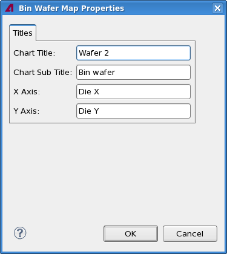

Bin wafer map properties
The Bin Wafer Map Properties dialog lets you specify the labels of a Bin wafer map view.

The dialog contains these elements:
- Chart Title: This field contains the title displayed at the top of
the chart.
By default, this is the wafer number.
- Chart Subtitle: The subtitle displayed beneath the title of the
chart.
By default, this is "Bin wafer".
- X-Axis: The label for the x-axis.
By default, this is "Die X".
- Y-Axis: The label for the y-axis.
By default, this is "Die Y".
Functional changes
- Introduced in SmarTest 7.2.0